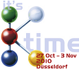
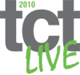

|
01 - 04 Aralýk 2010 > EuroMold, World Fair for Moldmaking and Tooling, Design and Application Development
Ülke / Þehir: Almanya /
Frankfurt
Yer: Exhibition Center, Frankfurt/Main
The whole process chain "From Design to Prototyping to Series Production" is represented at EuroMold. A unique fair concept that closes the gap between industrial designers, product developers, producers, suppliers, and end-users. EuroMold shows methods for a quicker, more economical, and more efficient development and production of new products - a factor of increasing importance within the demands of the modern economy.
EuroMold 2010 welcomes Turkey as a partner country:
Market growth generates great opportunities for Moldmaking and Tooling
Having Turkey as a partner country, EuroMold 2010 dedicates itself to a rapidly emerging economy that occupies the fields of automotive engineering & electronics in particular. Hence exist the enormous opportunities for Moldmaking and Tooling. The central position between Asia, Gulf States and Europe awards Turkey a significant function. Since several years EuroMold is experiencing strong interest migrating from Turkey.
Industrial promotionTurkey records an economically impressive and ongoing upward trend. For nearly 30 years Turkey’s GDP has been growing at an annual average rate of 5%. Therefore, Turkey bears resemblance to India, Russia or South Korea and can be counted among other economically significant nations. Additionally, in recent years the high inflation rates ware restrained.
Istanbul is the dominant market and trading centre in Turkey now. One of the main industrial sectors is the construction of buses and tractors as well as diesel engines. Turkey is essentially European market leader in bus production.
In addition, the automotive and electronics industries are gaining significance. Every year Turkey produces more than one million vehicles indicating a strong upward trend. This industry sector employs around half a million people. Toyota, MAN, Daimler AG, Ford, Fiat, Mercedes-Benz and Renault have already established production facilities in Turkey parallel to Turkish automotive manufacturers such as Tofaþ, Etox, Temsa, BMC and Folkvan.
The electronics industry portrays enormous growth rates. Turkish companies like Vestel, Beko and Profilo-Telra produce units for most well-known brands and, therefore, occupy approximately one third of all TVs being sold in Europe. Well-known manufacturers such as Bosch and Sony have also established manufacturing facilities in Turkey
Conferences, Forums, and Workshops at EuroMold 2010
Conferences
» Conference Materials
» Confernence Partner country Turkey
» Conference Design for Industry and Automobil Manufacture
» SPE Conference
» Wohlers Conference "The Business Impact of Additive Manufacturing"
Lecture Forums
» design+engineering
» Exhibitor's Lecture Forum
» Materials
» Simulation + VR
Workshops
» Formula Student Workshop...
Daha
fazla bilgi için: www.euromold.com
27 Ekim - 03 Kasým 2010 > K 2010, 18th international Trade Fair Plastics and Rubber:
Ülke / Þehir: Düsseldorf / Almanya
Yer: Düsseldorf Fairgrounds, Halls 1 - 17
Staging Cycle: Every 3 years
Main product groups:
- Raw materials, auxiliaries
- Semi-finished products, technical parts and reinforced plastics
- Machinery and equipment for the plastics and rubber industries
- Services for the plastics and rubber industries
Organizer: Messe Düsseldorf GmbH
Daha
fazla bilgi için: www.k-online.de
26 -30 Ekim 2010 > EuroBLECH 2010, 21st International Sheet Metal Working Technology Exhibition:
Ülke / Þehir: Almanya /Hannover
1,450 exhibitors from 43 countries will present the latest trends in fabrication and the right solutions, machines, tools and materials. A clearly structured exhibition profile covers the entire sheet metal working technology chain:
- Sheet metal, tube, sections (ferrous and non-ferrous)
- Finished products, components, assemblies
- Handling
- Separation / Cutting
- Forming
- Flexible sheet metal working
- Tube / Section processing
- Machine elements
- Joining / Welding / Fastening
- Surface treatment of sheet metal
- Tools / Dies
- Controlling / Regulating / Measuring / Testing
- Quality assurance
- CAD/CAM systems / Data processing
- Factory and warehouse equipment
- Environment protection / Recycling
- Safety at work
- Research and development
Ziyaretçiler için Türkçe doküman: www.euroblech.com/_downloads/langs/EB_Visitor_TR.pdf
Daha
fazla bilgi için: www.euroblech.com
19
- 20 Ekim 2009 > TCT LIVE 2010 Software & Technology for Product Development & Manufacturing:
Ülke / Þehir: Ýngiltere / Coventry
Yer: Ricoh Arena
Taking place annually, TCT successfully draws together everyone involved in the concept, design, manufacturing and specification functions. Designers, prototype specialists, technical directors, development engineers, product managers, purchasing engineers, design directors, chief engineers, sub-contractors, consultants and other manufacturing professionals all attend TCT searching for the latest technologies to help them reduce time to market.
The exclusive focus on Product Development and Manufacturing technologies stand TCT apart and the event benefits from its unique position as the place to attend to learn about and source the most up to date information that every company needs to know.
Exhibits cover the vast range of RP&M machines and technologies. In addition, the exhibition brings together major players from the sectors of Inspection, Scanning and Digitizing, CAD/CAM/CAE Software and Materials all of whom showcase their latest offerings presenting the perfect opportunity for the prospective visitor to appraise all of the latest technologies on the market. Service providers from all the sectors are also on hand to demonstrate the most effective ways of utilising the technologies available.
- Meet over 180 leading suppliers in the marketplace face to face
- See the latest machines and technologies LIVE
- Source new suppliers and build relationships with existing partners
- Learn how to implement new technologies that are available
CONFERENCE PROGRAMME
The globally recognised Additive Manufacturing Conference returns with two-days of industry focussed papers looking in-depth at the use of the Additive Layer Manufacturing in the Transport, Jewellery, and Medical/Dental arenas. Day 1 will also incorporate an overview of the ALM Landscape and New Breakthroughs in ALM...
Daha
fazla bilgi için: www.tctshow.com
02 - 04 Haziran 2010 > ROSMOULD International Specialized Exhibition - Moulds, Die Moulds, Stamps.
Ülke / Þehir: Rusya Federasyonu / Moskova
Yer: Crocus Expo - Pavilion 3, Hall 14
ROSMOULD is the only exhibition on the CIS and post-Soviet territory dedicated to mold making and related industries. Since 2007 the Rosmould exhibition is being supported by EUROMOLD, the largest organizer of international events in the mold sector (www.euromold.com).
The International Tool Summit is held annually in the framework of ROSMOULD, it is dedicated to modern problems of design, production and operation of mould-generating equipment in each of the following subjects: market, competitive ability, innovative technologies, efficiency and production management. The 5th Anniversary Summit will continue discussing strategically important issues: "Engineering and economic background of the Russian mould-generating equipment market stabilization in the crisis situation".
Exhibiting Product Groups:
- Design and engineering;
- Simulation, prototyping;
- CAD/CAM/CAE/PDM software;
- Mould making and tooling;
- Die moulds and stamps;
- Metals, alloys, composites;
- Metal-processing and metal-working equipment;
- Cutting and measurement equipment;
- Shape-generating equipment;
- Peripheral equipment, robot devices etc.;
- Automation and quality control systems;
- Normalized components, units, parts;
- Innovation researches and projects;
Daha
fazla bilgi için: www.rosmould.com |